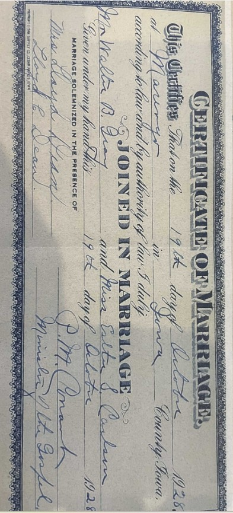
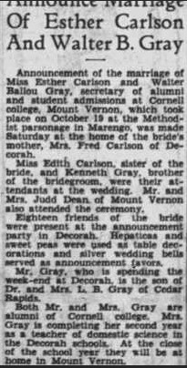
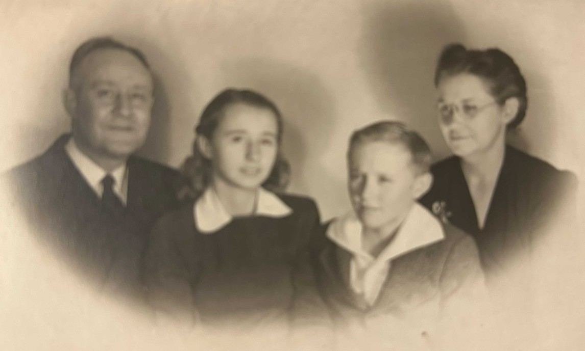
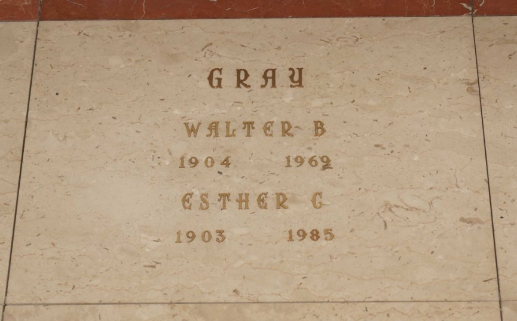

Esther Sofia Carlson.

Född 2 mar 1903 i Decorah, Winneshiek County, Iowa, USA 2 .
Död 10 dec 1985 i Decatur, Macon County, Illinois, USA 3 .
|
Walter Ballou Gray
|
|||

Esthers och Walters äktenskapsbevis från 1928

Esthers och Walters bröllopsannons

Walter och Esther tillsammans med barnen Marilyn och Richard

Esthers och Walters gravsten
|
Gift
19 okt 1928
i Iowa, USA
1
.
Esther Sofia Carlson.
Född 2 mar 1903 i Decorah, Winneshiek County, Iowa, USA 2 . Död 10 dec 1985 i Decatur, Macon County, Illinois, USA 3 . |
Framställd 6 nov 2026 med hjälp av Disgen version 2025.